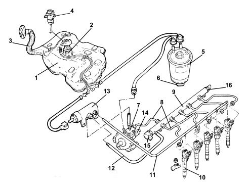

INTRODUCTION - FUEL TANK AND PIPES
- Path
- Descriptions > 10 ENGINE > 1040 FUEL TANK AND PIPES > INTRODUCTION - FUEL TANK AND PIPES
- Kind
- system description
- Applies to
- engines: 2.4 JTD 20v; all production periods
- Interactive page
- https://sloeber94.github.io/elrnDB-fCrm/en/#/194000750
Applies to: engines: 2.4 JTD 20v; all production periods
FUEL SUPPLY SYSTEM

1 - Fuel tank
2 - Submerged fuel assembly complete with level gauge control
3 - Fuel filler pipe
4 - Inertia switch
5 - Fuel filter filter element
6 - Water in fuel filter sensor
7 - Pressure pump
8 - High pressure pipes
9 - Single fuel manifold pipe (rail)
10 - Injectors
11 - Pipe from injectors to fuel return manifold pipe
12 - Return pipe from rail to fuel return manifold pipe
13 - Fuel return manifold pipe
14 - Fuel pressure regulator on pump
15 - Fuel pressure regulator on rail
16 - Fuel pressure sensor